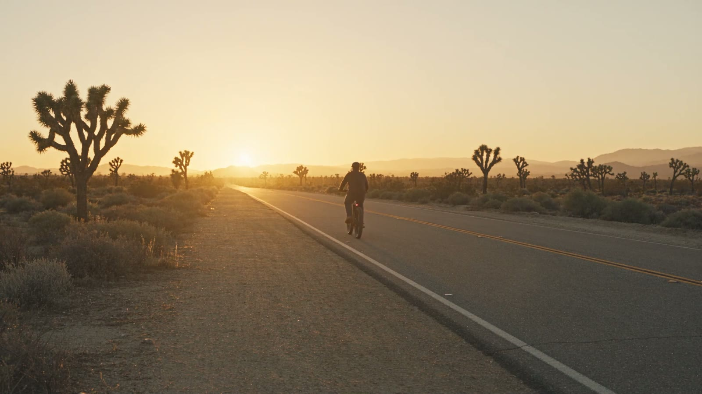
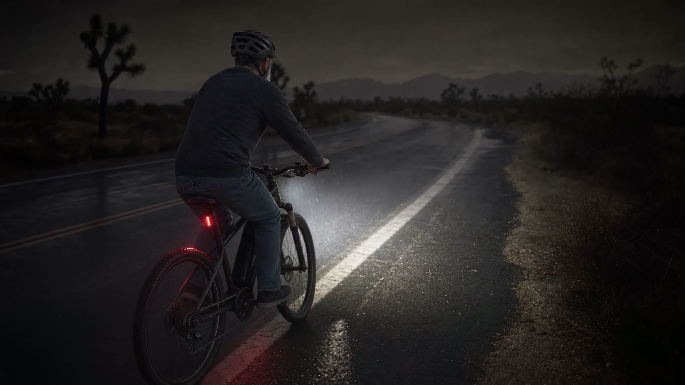
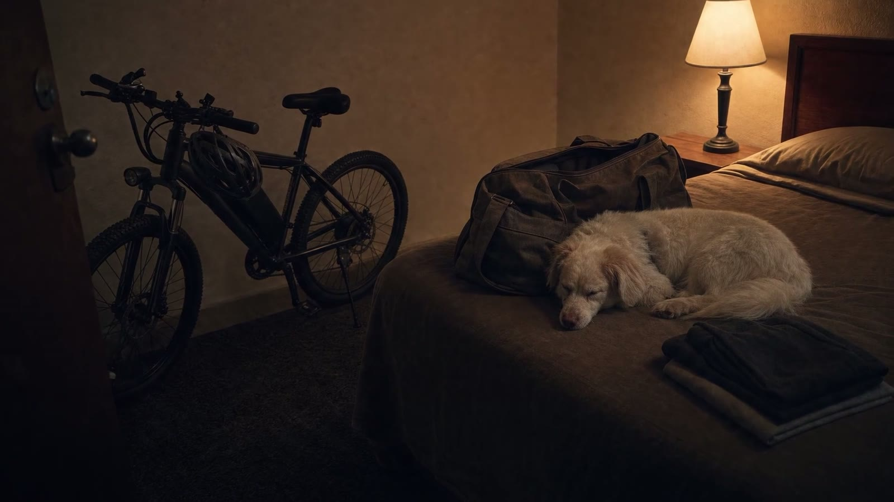
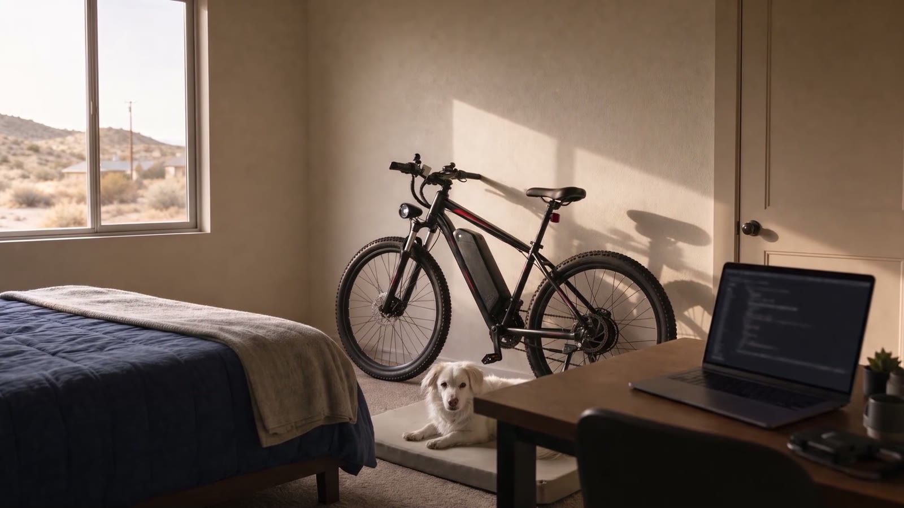
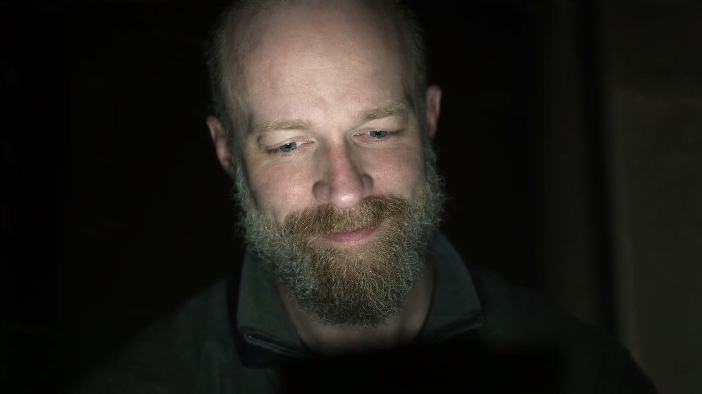
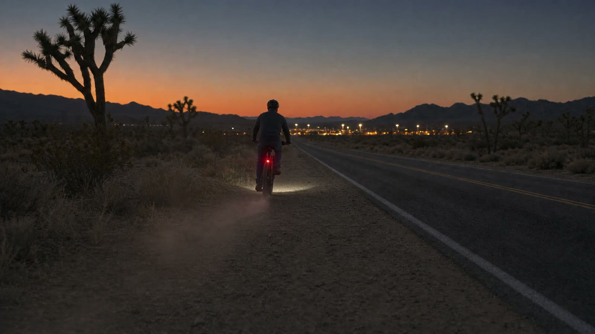
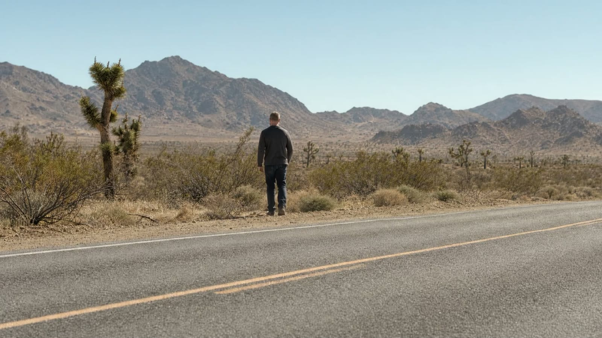
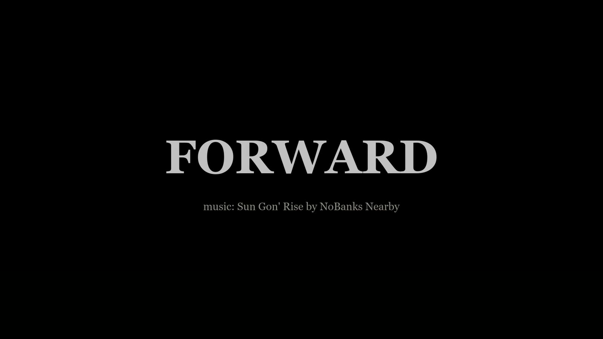

Press kit · Kickstarter launches Tuesday, November 17, 2026, 10:00 AM Pacific
A memoir of six months, three rooms, a bike, a dog and a terminal. By Ryan Hammer, the cinematographer who lived it, built it and rode through it.

Frame from the FORWARD trailer. Every frame of the trailer was generated in Runway from Ryan's own reference photos; the stills on this page are from that trailer, not photographs. Photographs of Ryan, the bike and the room are available on request.
Ryan Hammer is a 41-year-old cinematographer in Apple Valley, California, in the High Desert of San Bernardino County. In May 2026 his marriage ended and he lost his home. By June there was a court case. By fall he was living in a highway motel with his dog, an ebike and a duffel bag, then in a rented den on the back side of a ranch house. He pays for it stocking shelves on closing shifts at a Target ten miles away, riding an ebike twenty miles a day to do it.
He has been building software since July 2024, when he wrote his first line of code; by this fall that was 25+ applications and 58 open-source tools, built alone. In September 2026 one of those builds won $50,000 in XPRIZE's Build with Gemini hackathon, the largest AI hackathon ever held. The same month he started closing shifts at Target. By October he was building from a motel room, then from the den, at two in the morning. On October 30 a driver ran him off the road; he got up, straightened the bars, rode the last six miles and worked the shift. On November 3 his dog of fourteen years died. He wrote all of it down as it happened. FORWARD is that book.
An Apple Valley neighbor who stocks shelves on the night shift at a Target ten miles from home, rides Yucca Loma Road in the dark, and won the biggest AI hackathon in the world the same month he started the night shift.
Built on a laptop by a man with no degree, no savings and no car, while he was losing his home. What AI tools actually do for one person with nothing.
A Runway Creative Partner, a cinematographer since 2008, made the trailer solo from his own reference photos, with a voice cloned from his own recording and music from his own catalog.
Twenty miles a day, every day, as the only transportation he has. A close pass, a crash, and six more miles to the shift. The bike is the spine of the book.
A memoir written from the daily logs as they were kept: the budget spreadsheet, the receipts, the commit history, the filings. Crowdfunded with no publisher and no agent, with a documentary stretch goal.
I made it home. That's the whole story of this year, in one ride.FORWARD, draft, on riding home through rain after a closing shift
I got up. I bent the handlebars straight. I tightened the battery bracket in the dirt. I rode the other six miles, worked the shift, and rode the ten home in the dark.FORWARD, draft, October 30
Somewhere in the last six months I stopped being a man things happened to and became a man who gets up off Yucca Loma Road, straightens the bars, and rides. Forward. That's the whole word. That's the book.FORWARD, draft, closing lines
| Platform | Kickstarter, Publishing: Nonfiction. Creator: Ryan Hammer, Apple Valley, CA. |
|---|---|
| Launch | Tuesday, November 17, 2026, 10:00 AM Pacific |
| Length | 30 days, ending December 17, 2026. All or nothing. |
| Goal | $6,500, which pays for a professional edit, the cover and layout, the audiobook master and signed paperbacks for backers. The full breakdown, including the author's own pay, is printed on the campaign page. |
| Rewards | Digital first: ebook, an audiobook in Ryan's voice, the FORWARD soundtrack from his catalog, the trailer in 4K, early chapters. Signed paperbacks, a signed 5x5 framed frame from the trailer, and executive-producer credits at the top tiers. Book delivers June 2027. |
| Stretch goals | A documentary short from the footage and the logs, with a printed budget, if the campaign over-funds; a feature-length documentary at the top stretch. |
| AI disclosure | Stated on the campaign page: the trailer was generated in Runway from Ryan's own reference photos; the voice is a clone built from his own recording; every input was his. The book itself is written by Ryan. |
Click any image to open it full size (1600 px). Credit: "FORWARD trailer, Ryan Hammer / Runway". The trailer master (1080p, 24 fps, 3:11) is available on request.







Ryan Hammer, 41, has worked as a cinematographer and post-production editor since 2008, with clients including National Geographic, Samsung, Red Bull and the NBA. He is an official Creative Partner with Runway and Hailuo, and was featured on the Dropbox company blog in February 2025. As NoBanks Nearby he has released more than six hundred songs. He wrote his first line of code in July 2024 and has since shipped more than twenty-five applications and fifty-eight open-source tools, including the XPRIZE Build with Gemini winner NoBanks AI Listing Engine and the Mantle Turing Test Hackathon winner. He lives in Apple Valley, California, and works closing shifts at Target.
Links: nobanksnearby.com/hire (film work) · livingagentic.me (builds) · github.com/NoBanks · linkedin.com/in/nobanksnearby
Ryan Hammer
Apple Valley, California
Email: oceanviewryan@gmail.com
Phone: (443) 415-5796
Trailer: youtube.com/watch?v=sx0LNOGwXZM
Kickstarter: kickstarter.com/projects/ryanhammer/forward
Every date and figure on this page comes from the daily logs kept since May 2026 and from public results pages. Updated November 12, 2026.